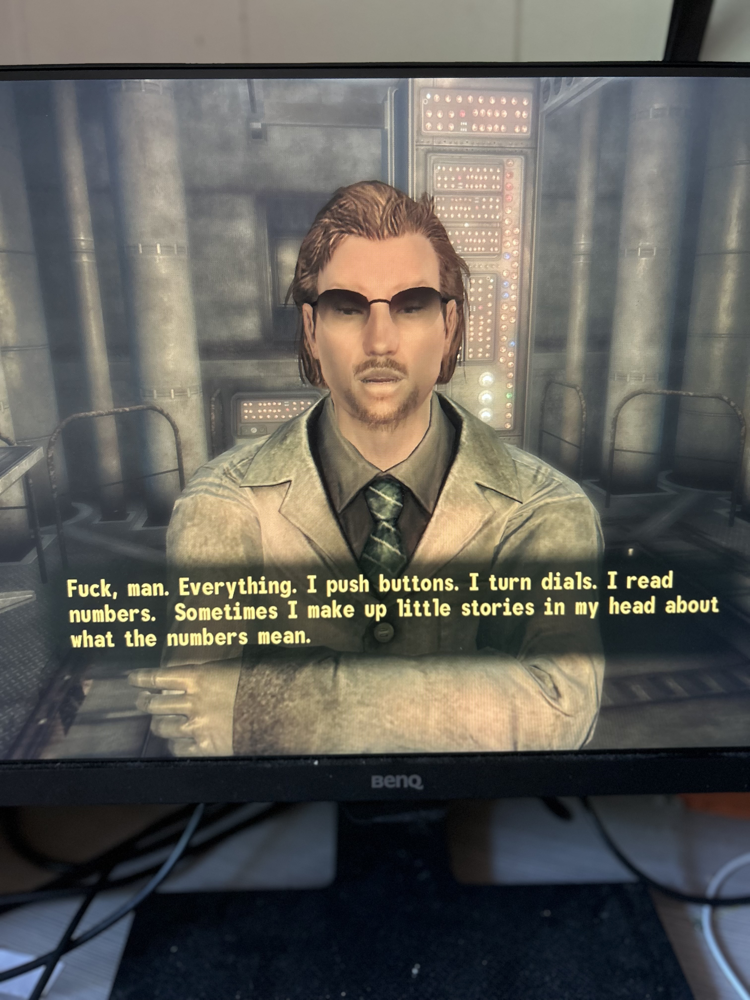
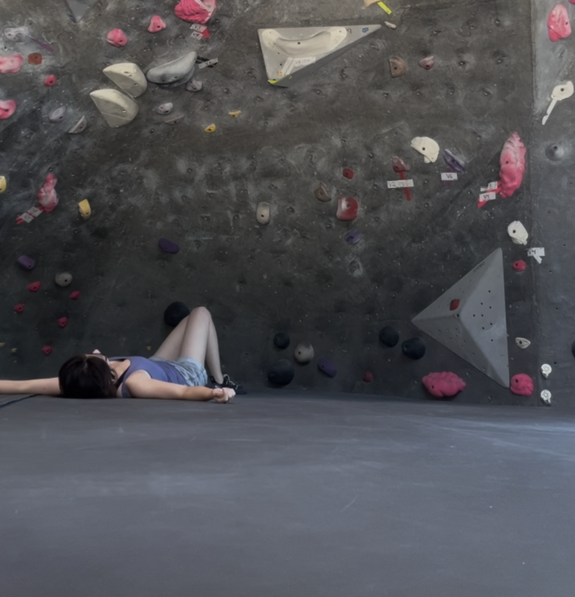

About
I am 3rd-year PhD candidate in Stanford's Commmunication department, where I am advised by Dr. Jennifer Pan. I use computational methods to study political communication across large collections of text, images, and video to answer how change in the "images in people's heads" causes change in people's political behavior.
Broadly, I aim to contribute as a scholar on two fronts. Amid rapidly evolving communication systems and access to datasets of unprecedented scale, my goal is to
1.
Identify and explain novel communication phenomena, such as online community identity, the prevalence of non-mainstream sources of news, and public perception of online censorship
2.
Clarify existing theoretical constructs and test standing assumptions in political communication research — assumptions that are laid bare when the form of communication itself changes, such as identity salience, nation image, and the delineation between what is political and non-political.
I believe that clever and unusual research design can shed light on the prevailing puzzles in social science. I am always happy to chat about collaboration and answer any graduate school questions.
Contact
- easyone at stanford dot edu
- GitHub